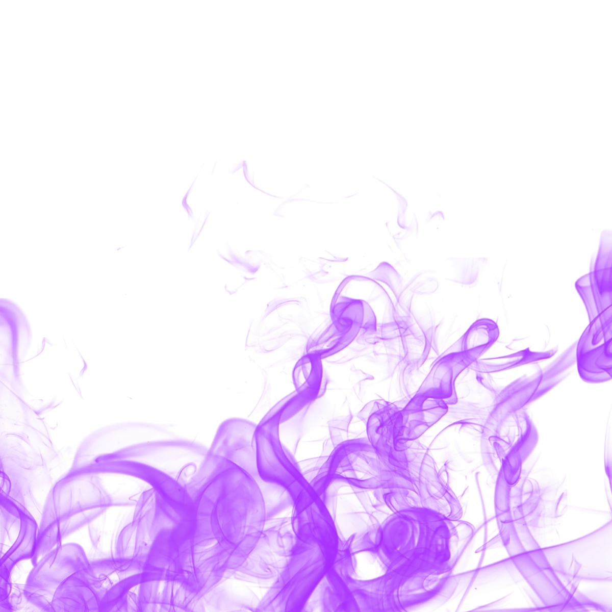

<ion-header translucent="true" class="toolbar">
  <ion-toolbar class="toolbar">
    <ion-buttons collapse="true" slot="end" class="btn">
      <ion-icon
        routerLink="/edit-profile"
        name="create-outline"
        collapse="true"
        slot="end"
        size="large"
        class="btn"
      ></ion-icon>
    </ion-buttons>
    <ion-title> Profile </ion-title>
  </ion-toolbar>
</ion-header>

<!-- both with collapse set to true. 
  When the secondary header collapses, the buttons in the secondary header will hide, 
  and the buttons in the primary header will show. -->

<ion-content [fullscreen]="true" color="primary">
  <ion-header collapse="condense">
    <ion-toolbar class="toolbar">
      <ion-buttons collapse="true" slot="end" class="btn">
        <ion-icon
          routerLink="/edit-profile"
          name="create-outline"
          collapse="true"
          slot="end"
          size="large"
          class="btn"
        ></ion-icon>
      </ion-buttons>
      <ion-title size="large">Profile</ion-title>
    </ion-toolbar>
  </ion-header>
  <ion-card color="light" class="ion-no-border">
    <ion-card-header class="ion-text-center">
      <ion-row class="ion-justify-content-center ion-no-padding">
        <ion-col>
          
          <!-- <ion-button class="profile-dp-edit">
            <ion-icon name="pencil-outline"></ion-icon>
          </ion-button> -->
        </ion-col>
      </ion-row>
    </ion-card-header>
    <ion-card-content color="light">
      <ion-list lines="inset" class="ion-no-padding">
        <ion-item color="light">
          <ion-icon name="person-circle-outline" slot="start"></ion-icon>
          <ion-label
            ><strong>{{this.fbSrv.currentUser.displayName}}</strong></ion-label
          >
        </ion-item>
        <ion-item color="light">
          <ion-icon name="mail-outline" slot="start"></ion-icon>
          <ion-label
            ><strong>{{this.fbSrv.currentUser.email}}</strong></ion-label
          >
        </ion-item>
      </ion-list>
    </ion-card-content>
  </ion-card>
  <ion-button color="medium" expand="block" routerLink="/history"
    >View history</ion-button
  >
  <ion-button color="medium" expand="block" fill="outline" (click)="logout()"
    >Sign Out</ion-button
  >
  
</ion-content>
